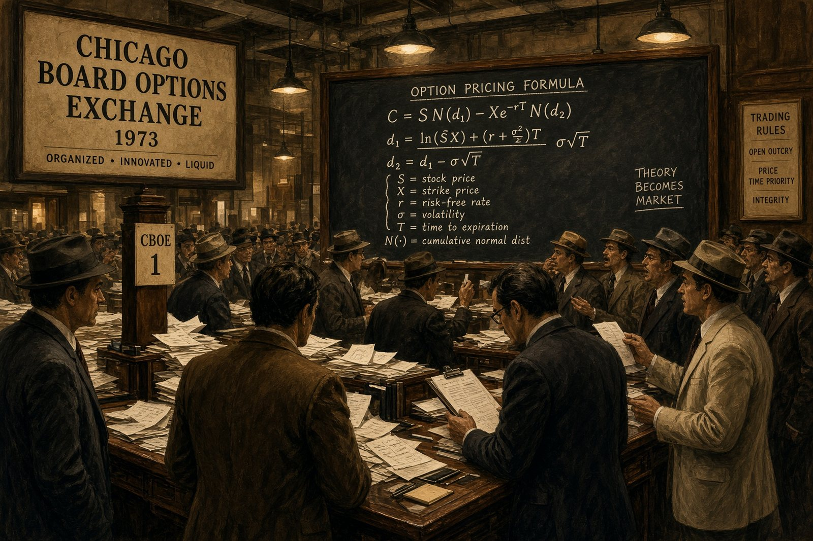
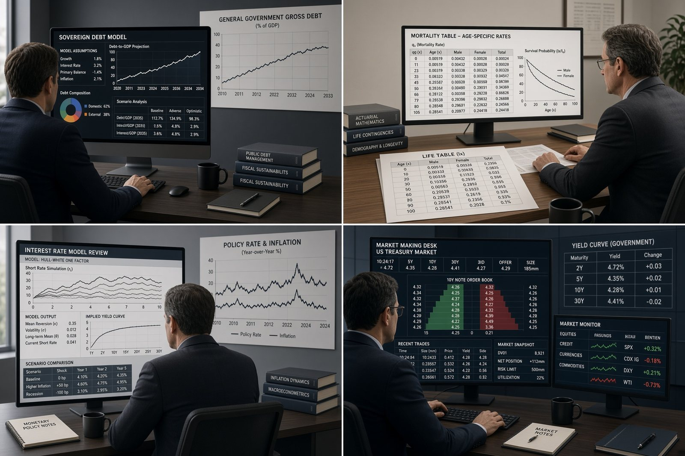

Figure 1. Focused study, not speculation: probability, statistics and an option chain on the same desk.
The Reaction I Keep Getting
When people ask what I do, I get mixed reactions. Some are curious. Some go quiet, perhaps unsure what to say about something they know little about. And some are openly hostile. They rarely explain why, so I can only guess. Perhaps they see trading as a form of gambling, or worse, and a waste of a career that could have been spent on something they consider far more respectable.
Those reactions rest on a misconception. In its harshest form, it pictures traders as jobless, careerless gamblers with no sense of purpose: people wasting their time, not knowing what they’re doing, and heading toward ruin for themselves and their families. Behind that picture is a simpler belief: that derivative trading bypasses real work, real education, and real careers. The people who hold it aren’t fools. They see leverage, speed, and stories of ruin, and they conclude the field is a casino.
It isn’t. But it also isn’t something that can be explained over a drink or dismissed in one. Understanding derivatives takes real study, and so does explaining them well. So, I won’t ask you to take my word for it, and I won’t try to squeeze the whole field into one article. I’ll keep this piece focused, and along the way I’ll point you to a larger body of work, some of it mine and much of it from others, so you can see for yourself how vast this field is. Within these pages, I’ll show you two things: what a disciplined trader actually has to know before a single order makes sense, and who gets hired around these instruments, and what they studied to get there.
The Cousin Who Lost Money
The objection I hear most is second-hand. A cousin lost money trading. A neighbor’s son blew up an account. A news story showed a trader in handcuffs.
That last image deserves an answer. The trader in handcuffs went to jail for fraud or for breaking the rules, not for trading. Every major market has a regulator to protect honest participants, such as the SEC (U.S.), ESMA (EU), FSA (Japan), CSRC (China), and SEBI (India). And every listed option is backed by a clearinghouse that guarantees the contract will be honored, such as the OCC (U.S.), Eurex Clearing (Europe), JSCC (Japan), and NSE Clearing (India).
The stories of the cousin and the neighbor’s son are different. Their losses are treated as evidence, but they’re anecdotes. Nobody hears about one car crash and decides that no one should learn to drive. We ask whether the driver was trained, followed the rules, and was paying attention. With trading, one visible failure closes the case.
Nobody asks what the cousin actually did. Did he study? Did he size his positions? Did he have a system, or was he reacting to headlines? And did he understand how his own mind behaves when money is on the line? Psychologists have studied that last question for decades. Harvard’s Ellen Langer showed that people often believe they control outcomes that are really driven by chance, a bias she called the illusion of control. A trader caught in it mistakes a lucky streak for skill, then bets more just before the luck runs out. The listener has a bias too: the cousin’s story is accepted without a single question because it confirms what they already believed. Bias shaped both sides of the story, how the money was lost and how the loss is remembered. I explored the first trap in I Knew This Would Happen and the second in The Research Confirmed It.
So here is an open invitation. If you have seriously studied what this field demands, from probability and option pricing to company analysis, the economy, risk management, and behavioral finance, then traded it with real money and a real system, and still concluded that it’s gambling, I’d like to sit down with you and understand why. Was it the strategy, the sizing, the psychology, or the lack of a system? Those are answerable questions. An unstudied objection isn’t evidence. It’s noise wearing the costume of experience. I set out the full list of what a trader needs to master later in this article.
An unstudied objection isn’t evidence. It’s noise wearing the costume of experience.
Why the Safe Path Feels Like the Only Path
Most families measure success at least partly in money, even when they say they want happiness and fulfillment, and mean it. The measure comes in layers: the paycheck, then the title, then the benefits, then the name on the building. Each layer is a proxy for the same thing: proof that you belong to something safe.
There’s nothing wrong with that. A salaried job is a real foundation, and most people who study derivatives keep one. What’s worth noticing is how the group decides what counts as safe. Much of the pushback isn’t only about risk. It’s about not standing out. Nobody says, “I want my child to be average.” They say, “I want my child to be secure.” The words differ, but the meaning is often the same.
The group also tends to avoid subjects it hasn’t studied, and derivatives are one of them. I explored how strongly the crowd pulls on our decisions in Everyone Was Getting Rich Except Me.
The Instrument Has a History and Its Own Mathematics
Derivatives are the umbrella: futures, forwards, swaps, and options. Options are the ones that show up at dinner tables and in headlines, so that’s where I’ll focus. If you want the formal definition first, start with What Really Changes When You Trade Options.

Figure 2. Theory becomes market: the Chicago Board Options Exchange opened in 1973, the same year the Black-Scholes pricing model was published. An evocative illustration, not a literal scene.
Options are older than the formula that priced them. Thales of Miletus, according to Aristotle’s Politics, secured the right to use the olive presses ahead of a bumper harvest in ancient Greece. Amsterdam merchants traded options on shares of the Dutch East India Company in the 1600s, and Joseph de la Vega described them in 1688. Japan’s Dōjima rice market, in the 1700s, became one of the first organized futures markets.
India has its own chapter. In 1875, the Bombay Cotton Trade Association began organized trading in cotton futures. It was one of the earliest such markets anywhere. Indian traders also had their own words for options: तेजी (teji) for a call and मंदी (mandi) for a put. One-day teji and mandi contracts were popular in Indian equity markets in the 1970s and 1980s, even though the law prohibited them, and they disappeared with the reforms of the 1990s. As Professor Jayanth R. Varma of IIM Ahmedabad has argued, the problem was never the instruments themselves. It was the absence of robust risk management and of safeguards against manipulation. Regulated options returned in June 2001, when the BSE and the NSE launched index options.
For most of that history, nobody could say with confidence what an option was worth on a given day.
In 1973, Fischer Black and Myron Scholes published the pricing model that changed that, with key contributions from Robert Merton. It valued an option from five inputs: the stock price, the strike price, the time to expiry, the interest rate, and volatility (a single number for uncertainty). Others, starting with Louis Bachelier in 1900, had tried before. This was the first model the industry widely adopted. The Chicago Board Options Exchange opened the same year. The binomial model followed in 1979: a tree of up and down moves that made the same ideas easier to teach and compute. Scholes and Merton received the Nobel Memorial Prize in Economic Sciences in 1997. Black had died in 1995, and the prize isn’t awarded posthumously.
Others carried the work into classrooms. Nassim Taleb spent years as an options trader and authored books on probability and risk, such as Fooled by Randomness and The Black Swan, that are read in business and engineering schools. Paul Wilmott founded the Certificate in Quantitative Finance, a program built around this mathematics. These are not fringe figures.
The formula didn’t make the instrument safe. It made it legible.
What a Successful Options Trader Actually Has to Know
This is the part the casino view misses. Placing an options trade takes a few seconds. Knowing whether it should be placed takes years of study across at least seven areas.
1Probability and statistics
Every option price is a bet on a range of outcomes. You need expected value, variance, and a feel for how often unlikely moves actually happen. Without that, a 90% chance of a small gain and a 10% chance of a large loss can look like a sure thing.
Where to learnKhan Academy, Statistics and Probability; MIT OpenCourseWare, Introduction to Probability and Statistics (18.05).
2The contract itself
Strike, expiry, exercise style, assignment, and what happens when a company splits its shares, pays a special dividend or gets bought out. These are legal terms, not suggestions. The Trader’s Guide to Option Adjustments and The $100 Billion Out-of-Office Reply cover the machinery behind them.
Where to learnThe OCC’s Characteristics and Risks of Standardized Options; the Options Industry Council’s free courses.
3Companies
Selling a put means agreeing to buy the shares. That means reading a company’s financial statements: the balance sheet, the income statement, and the cash flow statement. It means following earnings, guidance, margins, debt, and how management spends its capital. It also means understanding where a business stands against its competitors, and whether that position can last. An option on a business that you don’t understand is noise with a ticker symbol attached.
Where to learnKhan Academy, Accounting and Financial Statements; the SEC’s Beginners’ Guide to Financial Statements; Professor Aswath Damodaran’s free valuation lectures (NYU Stern); Michael Porter, Competitive Strategy; Clayton Christensen, The Innovator’s Dilemma.
4The economy and society
Interest rates set the cost of money and feed directly into option prices. Central bank decisions, inflation, elections, wars, trade policy, and supply chains all move volatility. So do industry shifts and environmental, social, and governance (ESG) concerns, from a new regulation to a scandal at the top of a company. None of this can be learned once and set aside. A trader has to follow political, international, and industry news every day, because markets react to it every day. Sovereign crises, such as Argentina in 2001, Greece in 2010, and Sri Lanka in 2022, show how debt, contracts, and probability play out at a national scale, where a default can mean hospitals without medicine and schools without teachers.
Where to learnKhan Academy, Macroeconomics; the Federal Reserve’s education resources; the CFA Institute’s Sustainable Investing Certificate, formerly its Certificate in ESG Investing.
Where to stay currentReuters and BBC Business for world and market news; company investor-relations pages and filings for industry news.
5Measurement
You need numbers that tell the truth about your own positions, and the standard ones often don’t. That’s why I built Premium Per Day to measure what I’m actually collecting, and Capital at Stake to measure what I’m actually risking.
Where to learnCoursera, Financial Engineering and Risk Management (Columbia University); Colin Bennett, Trading Volatility (free from the author).
6Sizing, a system, and psychology
Most blow-ups aren’t failures of the instrument. They’re failures of sizing, of having no written rules, or of the mind under pressure. A system says in advance what you’ll trade, how much you’ll commit, and what will make you exit. A journal tells you whether you followed it. Behavioral finance tells you why you didn’t. My series The Mind Against the Market is about exactly that.
Where to learnCoursera, Behavioral Finance (Duke University); Daniel Kahneman, Thinking, Fast and Slow.
7Regular review, not inertia
Many investors buy a stock and leave it untouched for years, out of habit rather than conviction. Options don’t allow that. Every contract has an expiry date, and each expiry forces a decision: close, roll, or take assignment. Each one is a built-in review of the position and of the company behind it. The Rule I Never Believed is about making those decisions for the right reasons. The same rhythm has a trap: constant decisions can turn into overtrading. Discipline is what keeps “review often” from becoming “trade too often.”
Where to learnThe SEC’s Investor.gov glossary of options terms; the Options Industry Council’s courses on managing positions.
None of this is secret. There’s a curriculum, and it’s published.
Buying and Selling Are Different Bets
The common picture of options is someone buying a cheap contract and hoping for a huge move. That’s only one of dozens of ways to use them. Covered calls, cash-secured puts, spreads, straddles, and iron condors are just a few of the strategies, and each has its own purpose, its own risks, and its own way of making or losing money. Lumping them all together as “option trading” makes about as much sense as treating every sport with a ball as the same game. Even the two most basic choices, buying an option or selling one, are very different bets, so they’re worth understanding first. And within those two, each role needs different expertise and a different mindset: the call buyer, the put buyer, the call seller, and the put seller. One is betting on a rise, another on a fall, another is paid to cap their upside, and another is paid to stand ready to buy.
Buying an option caps your loss at the premium you paid and leaves the upside open: a call profits if the stock rises far enough, and a put profits if it falls far enough. But time decay works against you every day you hold it, and the move has to come soon enough and be big enough. Many buyers lose small amounts again and again while waiting for a payoff that rarely arrives.
Selling an option pays you the premium up front, and time decay works in your favor. A covered call earns income on shares you already own, and a cash-secured put pays you to wait for a price at which you’d be willing to buy. But the premium is the most you can make, and your potential loss can be far larger. A covered call caps your upside if the stock soars, while you still carry the full downside of the shares. A cash-secured put can lose nearly the full strike if the stock collapses. That loss is much like owning shares bought at the strike, reduced by the premium you kept. A naked call has no theoretical limit. Many sellers collect small gains steadily, then give back months of them in a single bad move. Sizing doesn’t remove these risks. It decides whether you survive them.
Neither side is safe or reckless on its own. Buying usually means a small, capped loss with a lower chance of winning. Selling usually means a small gain with a higher chance of winning, and a rare loss that can be large. Margin doesn’t create new mistakes. It amplifies the ones you were already making.
The cost of skipping the discipline is measurable, and so are the reasons. India’s market regulator, SEBI, found that 93% of individual traders in equity futures and options lost money over the three years from FY22 to FY24, and 87.7% still lost money in FY26. Its 2026 studies show why. Most of those traders were short-term option buyers: in a sample of traders, 97% mainly bought options, and about nine in ten of them lost money. Most index-option trading happened on the day of expiry itself, when there is almost no time for a move to come. The most active traders accounted for most of the losses, and more experience didn’t help: the share of loss-makers rose the longer people kept trading the same way. Transaction costs averaged ₹26,000 per trader in FY24, and losing quarters were typically more than twice as large as winning ones. On the other side of many of those trades were professional firms running trading algorithms, which earned almost all of their category’s profits. Option sellers fared differently but not safely: fewer than half lost money, yet when they did, the average loss was about ₹51.7 lakh, more than eleven times that of option buyers. For the full data and to check these figures yourself, see SEBI’s 2024 study and its two 2026 studies on trader profitability and trader behavior.
The instruments aren’t the problem. The undisciplined use of them is. The people who blow up aren’t proof that options are a casino. They’re proof that the undisciplined path exists, and that it’s expensive.
The Classroom Students Never Had
Many students leave high school convinced that mathematics and physics have nothing to do with real life. Options prove them wrong. Probability stops being coin tosses and becomes a real question: what are the odds this option expires in the money, and is its price fair? Volatility, which sets real prices every day, is the standard deviation students learned in statistics class. The Greeks that traders watch are derivatives in the calculus sense: delta is the rate at which an option’s price changes as the stock moves. Logarithms and exponential growth show up in returns, compounding, and the time value of money. Even physics has a seat at the table. In 1900, Louis Bachelier used the mathematics of random movement to model prices, five years before Albert Einstein used similar mathematics to explain Brownian motion, and the Black-Scholes equation turns out to be a close relative of the heat equation from physics. Add balance sheets from accounting, interest rates from economics, and a few lines of code to test an idea, and a single option becomes a lesson that ties together everything school tried to teach. A student who never saw the point of calculus may find it the moment real numbers are attached.
From High School to Graduate School
Figure 3. Quantitative foundations, then financial engineering, then careers at clearinghouses, central banks and insurers.
The path into this field is public, and it starts earlier than most people think. At the undergraduate level, the core material is taught in mathematics, statistics, physics, computer science, economics, finance, actuarial science, and data science. Students don’t have to wait for a degree to start. Many join investment clubs, compete in events such as Citadel’s datathons or IMC’s Prosperity trading challenge, and take internships at exchanges, brokers, banks, and trading firms. Professional credentials can begin early too: the first actuarial exams, Level I of the CFA program, and in India, the NISM equity derivatives certification. At the graduate level, master’s programs in financial engineering, such as those at UC Berkeley, Baruch College, and Carnegie Mellon, build directly on that foundation, as do degrees in quantitative finance, financial mathematics and an MBA in finance. In India, the IITs, the Indian Statistical Institute, and the IIMs offer strong routes. A PhD in mathematics, physics, or finance leads into research and model validation. Where does it lead? To roles as quant researchers, risk analysts, derivatives structurers, market-making traders, model validators, and staff at exchanges, clearinghouses, and regulators such as the SEC and SEBI, along with a growing number of fintech roles that build the tools traders use.
Where This Knowledge Is Already Respected
If you still doubt the field is serious, look at where that path leads, and who is hired to work with these instruments.
The employers are institutions families already respect. The Options Clearing Corporation stands behind every U.S.-listed equity and index option trade. Exchanges design the markets, and market makers keep prices flowing. Investment banks value companies and model mergers. Insurers employ actuaries to price the risk of dying, crashing, or getting sick. Central banks such as the Federal Reserve model how interest-rate changes ripple through mortgages, jobs, and inflation. The International Monetary Fund models whether a country in crisis can repay, and on what terms. Norway’s sovereign wealth fund alone manages more than 21 trillion kroner, about $2 trillion, of national savings.

Figure 4. The quiet army: sovereign debt analysis, actuarial work, central bank rate modeling and market making. Same mathematics, different desks.
A few landmarks on pay. They’re approximate, U.S.-based, and tied to when this article was written. Treat them as landmarks, not promises.
| Role | Approximate pay (U.S.) |
|---|---|
| Quantitative researcher at a top trading firm, entry level | About $300,000 total compensation, more with sign-on bonuses (Levels.fyi) |
| Investment banking analyst, first year | About $180,000 to $220,000 all-in: roughly $110,000 base plus bonus (2026 bonus survey) |
| Investment banking managing director | Often $1 million or more (industry estimates) |
| Actuary | $130,000 median (U.S. Bureau of Labor Statistics, May 2025) |
Two things are worth saying about that table. First, many of these people never trade their own accounts. Their employers pay them for the knowledge. Second, that’s exactly the point. The knowledge for which a firm pays a premium is the same knowledge a disciplined individual trader needs. The difference is that an individual trader has no employer to absorb the mistakes.
The Knowledge Travels
No profession is free of money decisions. A doctor manages a retirement account. So do a pilot, a rocket scientist, and a teacher. A business developer deals with them every day.
Studying derivatives doesn’t push anyone into trading. It gives them literacy they’ll need anyway, earlier and with sharper tools. Your child might become a doctor who understands why an insurance premium is priced the way it is. A pilot who understands currency risk on an international route. A rocket scientist who spots the optionality in a supply contract. A business developer who can read a term sheet without flinching. The knowledge travels, even if the trading never does.
And it takes nothing away. Learning this doesn’t compete with a salaried job or contract work. They’re parallel tracks, and most people who study derivatives keep both.
Start Without Real Money
You don’t need capital to learn. Schools already introduce students to markets through investing clubs and simulations such as The Stock Market Game. Derivatives are the advanced chapter of that same education. Paper trading lets you learn the mechanics, such as assignment, time decay, and how a position reacts to a move, without paying for mistakes.
What paper trading can’t teach is how a real loss feels. That lesson comes later, with small positions that you can afford to lose. Real capital is a choice, not a requirement.
That’s the Whole Argument
The field has a real history. It has real mathematics. It has real careers in institutions families already trust. Trading it well asks for probability, statistics, contract knowledge, company analysis, an understanding of the economy, honest measurement, sizing, regular review, and discipline. It doesn’t ask anyone to abandon an education or a stable profession.
There’s a saying in Marathi, the language of Maharashtra, the Indian state whose capital is Mumbai (Bombay). Mumbai is also home to the BSE, Asia’s oldest stock exchange, and to the cotton traders who ran India’s first organized futures market:
Literally, “you can’t put on an act of money.” You can play almost any role in life, but you can’t fake having money. Markets work the same way. You can fake enthusiasm, confidence, even understanding. You can’t fake a losing trade. That’s why money is the sharpest classroom of all, not the most dangerous one.
Let the math decide. 🦉
— Sam Vishwas, Founder, OTS Ullu | Pleasanton, CA | 18 October 2026
Key Sources
-
SEBI 2024
Securities and Exchange Board of India. Analysis of Profit and Loss of Individual Traders Dealing in Equity F&O Segment. Source of the 93% loss figure for FY22 to FY24 and the FY24 transaction costs.
-
SEBI 2026
Securities and Exchange Board of India. Studies on trader profitability and trader behavior in equity derivatives. Source of the FY26 figures, the buyer and seller comparisons, and expiry-day activity.
-
1973
Black, F. and Scholes, M. “The Pricing of Options and Corporate Liabilities.” Journal of Political Economy, 81(3), 637–654.
-
1975
Langer, E. J. “The Illusion of Control.” Journal of Personality and Social Psychology, 32(2), 311–328.
-
OCC
The Options Clearing Corporation. Characteristics and Risks of Standardized Options (the Options Disclosure Document).
-
BLS 2025
U.S. Bureau of Labor Statistics. Occupational Outlook Handbook: Actuaries. Median pay, May 2025.
Related
- What Really Changes When You Trade Options
- What’s Really at Stake When You Sell an Option
- PPD: A Cleaner Way to Measure What You’re Actually Collecting Per Day
- The Rule I Never Believed
- Everyone Was Getting Rich Except Me
- I Knew This Would Happen
- The Research Confirmed It
Watch and Listen
- Investing vs. Gambling: Is the Stock Market Just a Digital Casino?
- Investing vs. Gambling: The Wall Street Casino Myth Debunked
- The Research Illusion: How Smart Investors Sabotage Themselves
Pay figures are approximate U.S. ranges as of October 2026 and will change. This article is educational. It is not career, investment or financial advice, and it is not a recommendation to buy or sell any security. Options involve risk and are not suitable for all investors. Short options can produce losses larger than the premium received. Readers should understand the product, and the margin requirements at their broker, before trading. Before trading options, read Characteristics and Risks of Standardized Options, available from your broker or The Options Clearing Corporation.